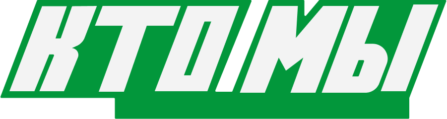
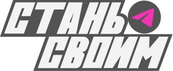

онлайн-сервис о переработке
Особенность trace
Мы уверены, мусор — это актив нашего времени. Забудь про эко-добродетель. Trace научит тебя монетизировать отходы. спаси свой кошелек и планету. мы не проповедуем, а зарабатываем
принципы trace
помоги сначала кошельку, потом планете
маленькие шаги ведут к большой цели
об экологии Честно, прямо и по делу
Ценности TRACE
основа медиа — любовь к деньгам и людям


T — transform

R — Rational
A — active
c — conscious
E — ECONOMY
